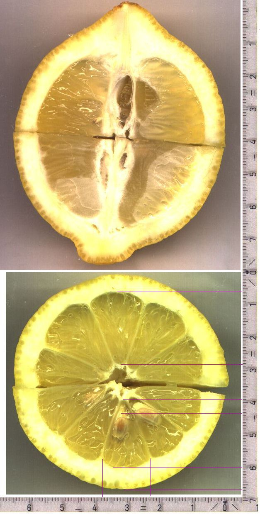
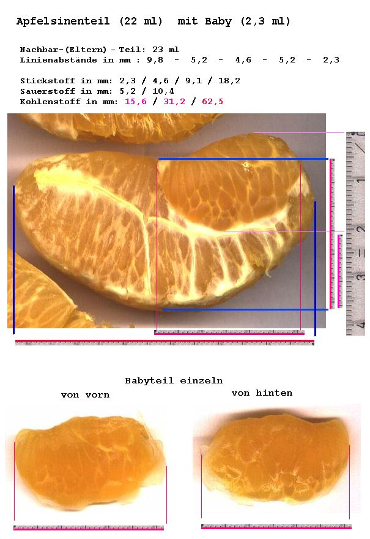

Zitrone
Bei dieser Zitrone sind oben die Fächer nichtmal
2mm länger, was aber genügt hat, um die Kernebildung zu
verhindern.:

Diese Apfelsinenteile haben alle keine Kerne, weil
die Teile so riesig sind, daß die Kerne nicht in der inneren
Hälfte zu liegen kämen. Sie haben vom Volumen her schon
ihre Maximalgröße erreicht, so daß kleinere Teile
zwischengeschaltet werden müssen, die aber wegen der Selbstähnlichkeit
dasselbe Problem haben und auch kernlos sind.

zurück
|